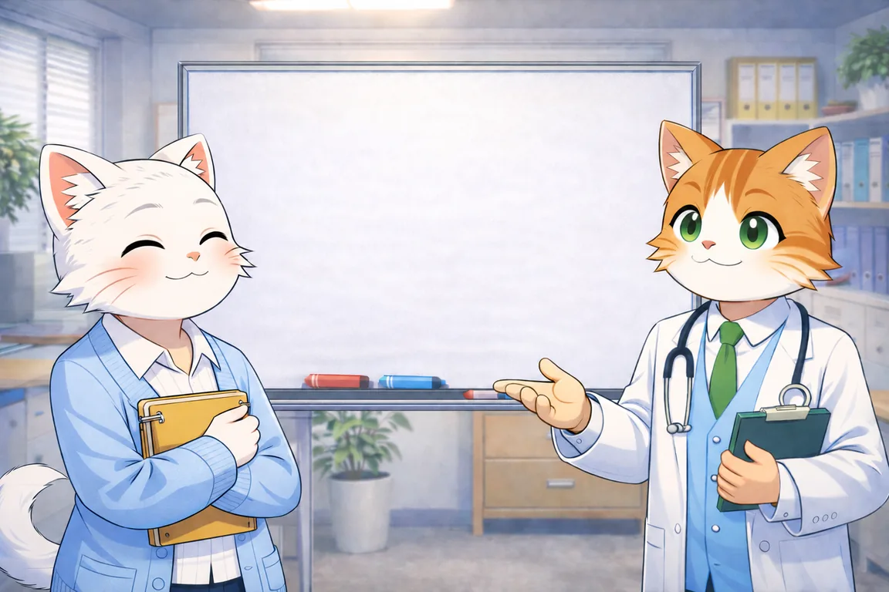

今日のモードを選ぶ
途中で休憩できます。結果は復職可否を示すものではありません。
約3–5分短時間ミッション
1〜4キー回答ショートカット
いつでも休憩・再開OK
進行1 / 6
スコア0
コンボ0
モード標準
キーボード：1〜4で回答／Pで休憩／Mで音声切替
ミッション完了
今感じている疲労を、1〜5から選んでください。
今回の記録
同じ日の中でも、疲れや環境によって結果は変わります。
0スコア
0%正答率
0秒平均反応時間
—主観疲労 1–5
メールの優先順位を判断しながら、短い割り込みコードにも対応します。

途中で休憩できます。結果は復職可否を示すものではありません。
キーボード：1〜4で回答／Pで休憩／Mで音声切替
今感じている疲労を、1〜5から選んでください。
同じ日の中でも、疲れや環境によって結果は変わります。
このコードを覚えて、メール判断を続けてください。
音声が聞けない場合も、同じ内容を字幕で確認できます。
画面から目を離しても大丈夫です。準備ができたら再開してください。